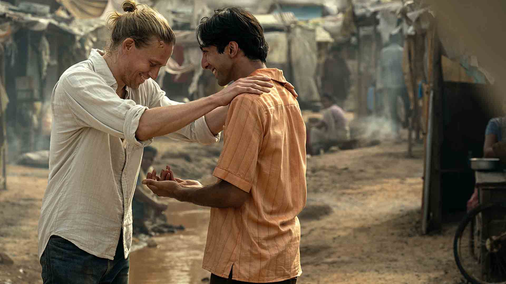
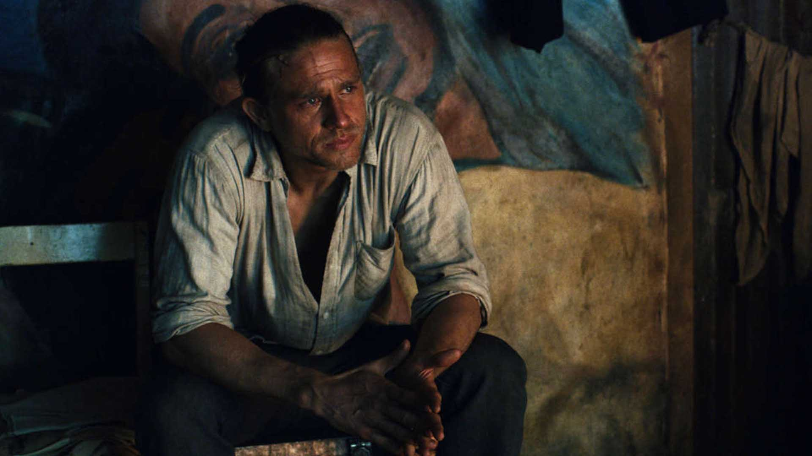
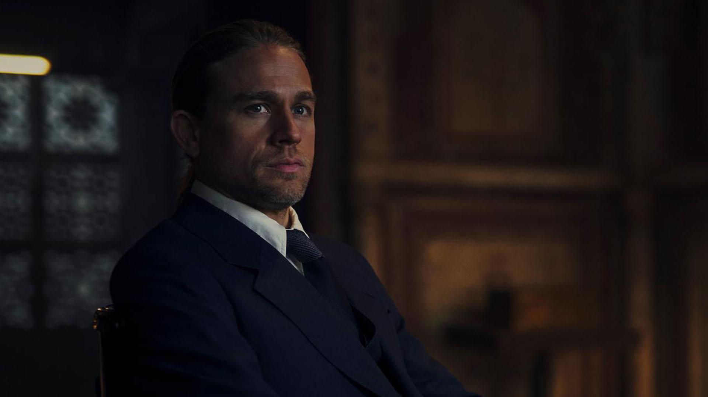

سریال شانتارام (Shantaram) مجموعه درام و دلهرهآور جدید اپل تی وی پلاس است که چارلی هونام را در قالب یک استرالیایی نهچندان قانعکننده و جالب قرار میدهد. همراه زومجی باشید.
«انسان خوب و بدی وجود ندارد. کاری است که آنها انجام میدهند یا نمیدهند؛ این کار است که آنها را بد یا خوب میکند.» در سال ۲۰۰۳ بود که رمانی با نام Shantaram توسط گرگوری دیوید رابرتز نوشته و منتشر شد. داستان این کتاب حول محور یک سارق بانک محکوم و البته معتاد سابق هروئین میچرخد که از زندان پنتریج فرار میکند و به کشور هند میرود. اینطور گفته شده که این رمان تا حد زیادی براساس اتفاقات واقعی زندگی خود نویسنده نوشته شده است؛ با الهام از اتفاقاتی که در زندگی او رخ داده بود. البته یک سری ادعاها هم توسط خود رابرتز مطرح شده بود که اعتراض افراد دخیل در داستان را بهدنبال داشت؛ افرادی که در این داستان درگیر بودند، این ادعاها را نادرست خواندند. از همان زمان افراد و استودیوهای زیادی تمایل به ساخت یک اقتباس سینمایی از آن را داشتند. قرار بود اثری با حضور جانی دپ در قالب شخصیت اصلی ساخته شود (آن هم به خاطر علاقه زیادی که نسبت به کتاب نشان داده بود) و نویسندگی آن را خود رابرتز برعهده داشته باشد. قرار بود این فیلم اواخر ۲۰۰۶ به نمایش در بیاید اما آنقدر مشکلات مختلف و زیادی سر راه این پروژه قرار گرفت که استارت تولید آن تازه اوایل سال ۲۰۰۷ خورده شد. هرچند که بعد از گذشت مدتی شرکت برادر وارنر که حق و حقوق تولید این فیلم را داشت، بهطور کامل پروژه را متوقف کرد؛ بهانههای مختلفی هم مانند دخالت اعضای انجمن نویسندگان آمریکا، اختلاف برنامه، مشکلات بین هند، مکزیک و ایالات متحده و غیره را مطرح کرد.
در سال ۲۰۱۳-۲۰۱۵ شرکت برادران وارنر دوباره تلاش کرد تا یک نسخه سینمایی از این داستان را بسازد و جانی دپ باز هم در تلاش بود که نقش اصلی آن را ایفا کند. اما مجددا بخت با این پروژه یار نبود و بعد از گذشت مدتی کاملا کنار گذاشته شد. اما شرکت پارامونت موفقتر بود و اوایل سال ۲۰۱۸ ساخت یک نسخه تلویزیونی از کتاب شانتارام را کلید زد. البته این نسخه تلویزیونی هم آنقدرها بدون مشکل نبود. هنرمندان زیادی وارد تیم تولید شدند و سرانجام آن را ترک کردند. اما خوشبختانه سریال Shantaram شانس بیشتری داشت و توانست روشنایی روز را ببیند. سرانجام چارلی هونام در نقش دیل کانتی/لیندزی فورد، فیصل بزی در نقش عبدالله طاهری، دیوید فیلد در نقش والش نایتینگیل، علی خان در نقش قاسم علی، الکساندر صدیق در نقش عبدل قادر خان و غیره بهعنوان بازیگران تیم انتخاب شدند. انگار آنقدرها هم که باید و شاید، این سریال به مذاق منتقدان خوش نیامد زیرا نمرات آنچنان بالایی را برایش ثبت نکردند و سرانجام یک میانگین نمره متوسط را برایش به ارمغان آوردند. آنها معتقد بودند که چارلی هونام در قالب نقش لین فوردِ خشمگین، بهطرز عجیبی جذاب و چشمگیر شده است. اما عدم پیشرفت روایت شانتارام و حرکت نکردن آن به سمت جلو، باعث میشود که این شخصیت جذاب و متقاعد کننده، سرگردان شود. البته درکنار منتقدان، بینندگان هم انتقاداتی داشتند که بیشتر از هر چیزی حول محور لهجه و گویش چارلی هونام میچرخید؛ آنها معتقد بودند که او لهجه استرالیایی را خیلی بد اجرا کرده است. همانطور که بالاتر هم گفته شد، داستان سریال شانتارام حول محور لیندزی فورد میچرخد.
لیندزی فورد که در ابتدا با نام دیل کانتی شناخته میشود، یک معتاد هروئین است که به همراه دوست خود میخواهد به یک بانک دستبرد بزند. او که پیش از همه این اتفاقات یک کارآموز پیراپزشکی بود، هنگام فرار از بانک با یک نگهبان درگیر میشود؛ نگهبانی که درنهایت مورد اصابت گلوله قرار میگیرد. دیل که نمیتواند بهراحتی از کنار این ماجرا عبور کند، سعی میکند این نگهبان را نجات دهد اما همین موضوع باعث دستگیری خودش میشود. او به جرم چندین سرقت مسلحانه متهم میشود و حاضر نیست دوست خودش را که مسبب کشته شدن آن نگهبان شده بود، لو دهد. دیل اعتقاد دارد که باید مجازات کارش را بپردازد و از داخل زندان نمیتواند این کار را بکند. به همین ترتیب هم از زندان فرار میکند، هویت جدید لیندزی فورد را میگیرد و به سمت هندوستان فرار میکند تا زندگی جدیدی را تشکیل دهد. اما بدبختیها آنجا هم رهایش نمیکنند و مشکلات زیادی را برایش به وجود میآورند. او به مرور زمان خودش را درگیر ماجراهای بزرگتر و خطرناکتری میکند؛ دلیل اصلی تمام آنها هم این است که لیندزی نمیتواند نسبت به انسانهای دیگر بیتفاوت باشد و اصطلاحا چوب دلش را میخورد. اما دراینمیان، دوستان زیادی هم پیدا میکند که میتواند در مواقع دشوار از آنها کمک بگیرد. طرفداران خیلی زیادی بودند که اعتقاد داشتند این سریال و به طبع رمان اصلی، تصویری واضح از زندگی در بمبئی در اوایل تا اواخر دهه ۱۹۸۰ را نشان داده بود؛ موضوعی که تحسین خیلیها را برانگیخت.
سریال شانتارام علاوهبر داستان اصلی، جنبههای فلسفی زیادی هم دارد و مکالمههای زیبایی برای شخصیتها نوشته شده است. «+قادر خان: هیچ چیزی، به آن شکلی که ما میبینیم، وجود ندارد؛ چشمان ما دروغ میگویند. هر چیزی که به نظر واقعی میآید، بخشی از توهم ما است. -لیندزی: پس اگر همه چیز یک توهم است، چجوری ما میدانیم که باید چه کار کنیم یا چطور زندگی کنیم؟ +قادر خان: دروغ میگوییم. انسان عاقل در مقایسه با انسان دیوانه، صرفا فقط میتواند دروغهای بهتری بگوید. ما دروغ را ترجیح میدهیم، چون کار راحتتری است. -لیندزی: یعنی به این شکل است ما عاقل میمانیم؟»